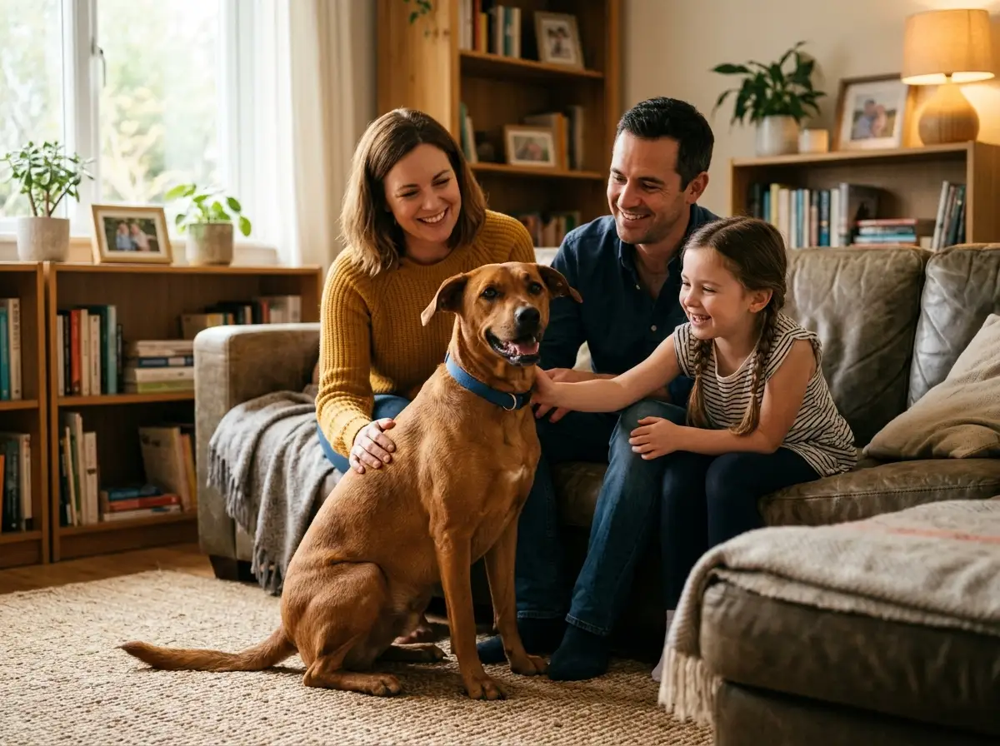

Essential Puppy Vaccination Schedule: What Every Salem Pet Parent Must Know
Protecting your newborn pup against Parvovirus, Distemper, and Rabies during their first 16 weeks.
Read Article
Practical tips on nutrition, vaccines, dental care, and emergency readiness.

Learn how Stackly's sterile operating theatre, inhalation anesthesia gas, and dedicated recovery ICU keep pets safe during soft-tissue and orthopedic procedures.

Protecting your newborn pup against Parvovirus, Distemper, and Rabies during their first 16 weeks.
Read Article
Head shaking, odour, and redness: diagnosing ear infections before they cause permanent hearing damage.
Read Article
Key tips for keeping your cats hydrated, cool, and active during high summer temperatures in Salem.
Read ArticleHow early Doppler ultrasound, weight management, and physical therapy keep senior dogs active.
Read Article
Understanding calculus plaque accumulation and how ultrasonic scaling preserves tooth roots.
Read Article
Crucial steps for handling accidental poisoning, severe bleeding, or trauma wounds in transit.
Read Article

Nutrition, senior pets, travel health certificates, and emergency first-aid checklists.